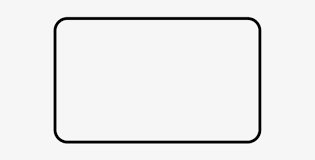

Responsive
make the grid fluid fixed and add per-
media layouts as needed. change the
column and gutter widths and remove or
and columns as needed

Semantic
The grid keeps your markup semantic and
works without any "grid_x" classes. Unless
you want to use them, in which case they
are included
Precise
profound Grid uses negative margins to
calculate columns. Unlike with the other grid
systems, fluid layouts will look exactly the
same in every browser